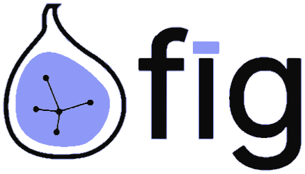

University partnership / 2026AI Design Makeathon.
Give your students a real-world
AI design challenge.
AI is changing products.
Design must catch up.
Participants will tackle emerging AI interaction and product challenges, including how people understand, guide and trust increasingly autonomous systems.
The goal is a functional prototype that people can experience, supported by project visuals and a short demo video.
Real enterprise questions
Potential briefs explore multi-agent interaction, understandable AI systems and new interfaces for autonomous software.
Final briefs will be announced before the event.Concepts made visible
Functional prototypes, project visuals and demos make student ideas tangible and shareable.
A real brief.
A real portfolio piece.
For three days, a design class becomes a product team. This is what your students get from taking part.
Work on a live AI problem
Teams tackle emerging AI interaction and product challenges, such as how people understand, guide and trust increasingly autonomous systems.
Learn the tools in the room
Tool workshops during the makeathon help students move from idea to prototype with the AI tools product teams use today.
Find the right teammates
FIG’s event platform helps students discover collaborators, send invitations and build a team, so no one has to arrive with one.
Leave with something to show
Every team ends with a functional prototype, project visuals and a short demo video that students can add to their portfolios.
Get seen by practitioners
Every project is reviewed by a design judge and a judge who deeply understands business and real users, so you hear how your work fits real scenarios, not only a design critique. Format and criteria will be confirmed before the event.
Present in San Francisco
The winner demo, with awards and a mixer, is in person at Third Coast Foundry in San Francisco, and winning projects can stay visible on the FIG platform afterward. Teams cover their own travel; teams that cannot travel can present online.
The winner demo date is to be announced. Everything before it takes place online. The event does not cover travel to San Francisco.
From concept
to live demo.
- Nov 14–16
Online makeathon
Three days of team formation, tool workshops, design and prototyping around real-world AI challenges.
- Nov 17–19
Online judging
A three-day virtual judging window: judges work in pairs, one from design and one with deep business and user context, and each pair reviews a group of projects; final format and criteria to be confirmed.
- Date TBD
Winner Demo
The only in-person day: selected winning teams present at Third Coast Foundry in San Francisco, followed by awards and a mixer. Date to be announced; everything before it is virtual.

Prior-event figures illustrate FIG’s community experience; they are not attendance projections for this makeathon.
Meet the
judges.
A good project has to work in the real world, not just look good as design. So we pair up a design judge and a judge who deeply understands the business context and real user scenarios to review each project.
Lewis Liu
Product, building agents and knowledge systems
Ex-Google (Gemini) · Startup advisor · Stanford GSBFred McHale
Executive Director of Product Design
Figma Educator Advisory Board, 2026–2027 · Ex-design manager, CiscoNeha Deshmukh
Product Design
Carnegie Mellon UniversityYitong Wang
User Experience Designer
California College of the ArtsHao Wang
Chief Strategy and Business Growth Officer
Stanford GSBZiyuan “Zoey” Zhu
Creative Technologist and Project Lead
MIT · Co-founder, FuturePIXELXuyan Zhao
Principal Product Manager, AI
AI/ML product · Ex-Collectors, eBay · Boston UniversityTo be announced
Judge from The University of Chicago
To be announced
Judge from University of Michigan
Final judging criteria, judge lineup and judging format are to be confirmed.
Why build
with FIG Studio.
FIG Studio is an AI venture studio that runs hackathons, demo days and mixers for builders. The makeathon brings that experience to student designers.
A community that shows up
Researchers, engineers, founders and product builders joined our last hackathon and mixer in September. Your students would build alongside that network.
One place for the whole journey
Registration, team matching, communication, project submission and judging all run on the FIG Event Platform, so students and faculty follow one clear process.
Industry and academia at the table
Microsoft, Amazon, IDEO AI Lab, Lenovo, Turo, The University of Chicago, Academy of Art University, the University of Michigan, SSG Accelerator and NetMind.AI join as co-hosts, partners and judges.
Work that outlasts the event
After the makeathon, builders and projects stay visible through project highlights, a builders leaderboard and the FIG community.
Bring your
students in.
Partnership starts with what your school wants for its students. These are the ways schools can take part, and we will shape the details together.
Host a workshop or office hour
Learning without boundaries. Knowledge grows when it is shared. The makeathon is an open online space where schools, practitioners and students teach and learn from one another, and every discipline and every idea that helps a young designer grow is welcome.
Teach a skill in a live online session. The topic is yours to choose: AI design tools, prototyping, design research, interaction craft, or how to tell the story of a project in a short demo.
Open a session for teams to drop in. Offer feedback on a concept, a portfolio or a prototype, or advice on building a career in design and AI.
Tell your students
We provide the poster and ready-to-share copy for newsletters, student channels and classrooms.
Bring a class, studio or club
Invite a group to take part together. Students form teams on FIG’s event platform.
Offer faculty or alumni
Nominate faculty or alumni to join the judging panel. Panel format and criteria are to be confirmed.
Be named as a partner
Your school appears with the event’s co-hosts and partners, and your students’ projects feature in the post-event recap.
These formats are proposals. Timing, scope and recognition will be agreed with each school. Partnership does not influence judging or award decisions.
Bring your students
to the building.
Tell us what you would like for your students. We’ll confirm how your school can take part and share what you need to tell them about the event.
Discuss a partnership